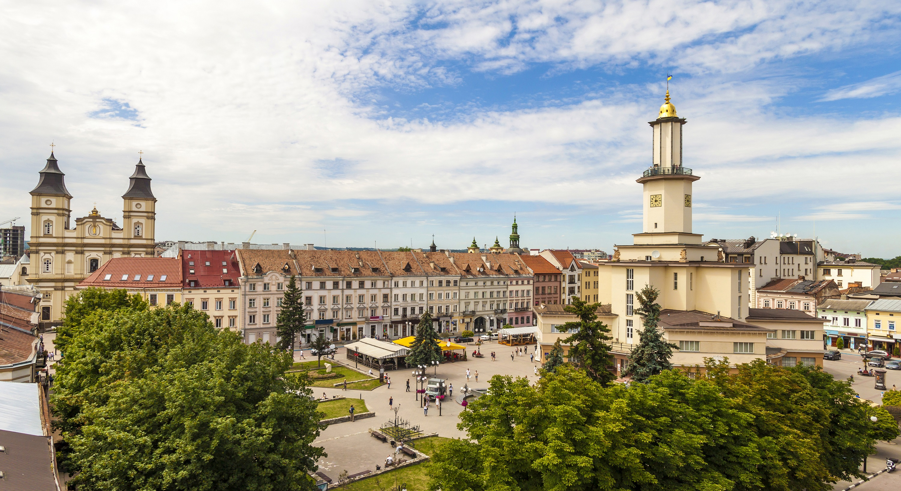
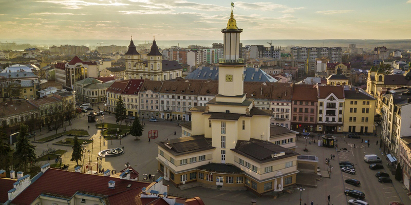

City news I-F
Сайт новин міста Івано-Франківськ

Івано-Франківськ – зовсім невелике і компактне місто, яке здається зовсім крихітним з висоти пташиного польоту. Але це взагалі не означає, що йому нема чим здивувати гостей і мандрівників. Насправді, щоб об’їхати всі цікаві околиці і дізнатися всі секрети міста, не вистачить однієї відпустки. Розповідаємо 10 цікавих фактів про нього!
- Гуляючи по Івано-Франківську, ви часто будете зустрічати назви «Станіслав» або «Станіславів». Справа в тому, що це стара назва міста, яку він носив з 1662 і загалом до 1962 року. Нову назву на честь Івана Франка місто отримало 9 листопада 1962 року в честь свого 300-річного ювілею.
- Це лише часткова правда, що місто заснували в 1662 році. Поселення під назвою Княгиня і Заболоття були на цій території набагато раніше.
- Спочатку Івано-Франківськ будувався, як могутня фортеця. Містечко оточували дерев’яні стіни, а потім – кам’яні оборонні споруди з земляним валом і ровом.
- Івано-Франківська ратуша тільки на перший погляд здається типовою для Західної України. Насправді вона побудована в стилі функціоналізм, і таких будинків по країні дуже мало. Причому її зовнішній вигляд протягом історії змінювався чотири рази. Крім того, це єдина ратуша в Європі із шоломоподібним позолоченим куполом.
- Найдавніша частина Івано-Франківська – це площа Ринок, яка збереглася з заснування міста. Колись це був центр шестикутної фортеці, у вигляді якої будували місто. До речі, колись вона називалася площею Смерті, тому що саме тут проводилися страти. До сих пір збереглися легенди про привидів опришків, які бродять по центральних будівлях.
- У 1919 році Івано-Франківськ тимчасово став столицею ЗУНР. Процес був досить складний, адже в основному столицею був Львів, пару місяців 1918 року – Тернопіль, а в 1919 році – Станіславів. Хоча він носив почесне звання лише з січня до травня, саме тут приймалися найважливіші рішення, але незабаром війська ЗУНР повинні були відступити за Збруч.
- В Івано-Франківську є унікальний пам’ятник, аналогів якому немає в Європі. Це пам’ятник яйцю.
- Ходять чутки, що під центром міста ховається загадковий підземний лабіринт. Частину катакомб будівельники вже одного разу знаходили. Але повністю підтвердити або спростувати легенду досі не вдалося.
- Найменша площа в місті – площа вулиці Івана Труша, яка налічує всього 360 квадратних метрів. Довжина самої вулиці – трохи більше 60 метрів, а ширина – менше 6. Як ми і говорили, Івано-Франківськ – дуже компактний! До речі, саме тому тут є деякі проблеми з громадським транспортом. Щоб ви точно могли охопити все, що хочеться, ми пропонуємо підібрати підходящий автомобіль в автопарку «Укр-Прокат» в Івано-Франківську і не орієнтуватися на міську інфраструктуру.
- Серед маленьких містечок Західної України Станіславів одним з перших отримав повноцінне електропостачання. Перші лампочки на залізничному вокзалі запалили в 19 столітті. До речі, сам вокзал тоді називали «Двірець».
Первинне призначення сайту
Сайт розроблявся як курсовий проект для ВПУ№21. Посилання на сайт училища